Computation of Pressure Distribution Using PIV Velocity Data
Gurka, R., Liberzon, A., Hefetz, D., Rubinstein, D., and Shavit, U.
Agricultural Engineering, Technion, Haifa 32000, Israel (aguri[at]technion.ac.il)
The pressure distribution in the stagnation region of an impinging jet was computed and compared with experimental results from the literature (Peper et. al 1997). Velocity maps were obtained using a Particle Image Velocimetry (PIV) and the Poisson equation was solved to result with the pressure field. A good agreement was obtained inside the stagnation region with some differences near the jet boundaries.
The experimental setup is shown in Fig. 1. It consists of a mixing chamber in which seeding particles and air were mixed, a convergence section, and a round smooth glass tube (length is 300 mm, inner diameter is 29.5 mm). A round flat plate (200 mm in diameter) was installed perpendicular to the flow, 1, 3, and 5 tube diameters downstream from the tube exit. A flow rate of 6.83e-4 m3/s was used to meet the flow conditions of Peper et. al (1997) and was measured using a Micro-Motion coriolis based flow meter (Fig. 1).
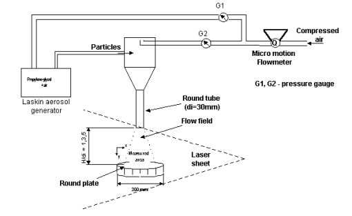
Fig 1: The Experimental Setup
The PIV system components include a Nd:YAG 160mj/pulse “Twins” laser system from Quantel, a 1K x 1K cross-correlation Kodak ES1.0 camera with a 200mm focal length lens, and a home made analysis software. Acquisition tools and integration was provided by Optical Flow System. Propylene-glycol particles were generated by a Laskin aerosol generator resulting in an average diameter of 0.75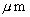 (Echols and Young, 1963). A choice of 32×32 pixels square interrogation areas, a 57.8 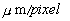 ratio, and repeating the PIV analysis every 16 pixels resulted in 3906 vectors in a field of 57.3 mm by 58.3 mm. For each distance between the tube exit and the plate (1di, 3di, and 5d i, with di representing the nozzle diameter), 130 realizations of the instantaneous velocity fields were measured. Vector validation was obtained by a signal to noise filter and a local kernel comparison filter resulting in an average rejection rate of approximately 5%. One such velocity map is shown in Fig. 2 .
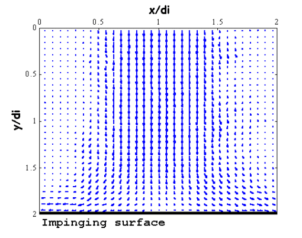
>
Fig 2: The velocity field near and above the flat plate.
Since the Poisson equation is obtained by applying a divergent operator on the Navier-Stokes equations, and since the use of continuity removes the transient terms, PIV generates data which can be used for pressure calculation. Following Corcos (1963) pressure was calculated by solving the Poisson equation. The equation is presented here using a Cartesian index notation.
| (1) |  |
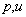and are the pressure, velocity, and location respectively,  is the air density, 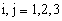, and the summation rule applies. Dirichlet boundary conditions were defined on the upper and side boundaries, 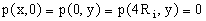, and a Neumann boundary condition, 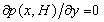 was defined on the plate (Fig. 1shows the origin at one diameter away from the center line. 2Ri=di). Mean pressure in turbulent flows can be computed by time averaging of each instantaneous realization or by rewriting the Poisson equation for the time averaged Navier-Stokes equations. It was found that both techniques produced the same results.
is the air density, 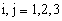, and the summation rule applies. Dirichlet boundary conditions were defined on the upper and side boundaries, 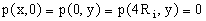, and a Neumann boundary condition, 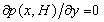 was defined on the plate (Fig. 1shows the origin at one diameter away from the center line. 2Ri=di). Mean pressure in turbulent flows can be computed by time averaging of each instantaneous realization or by rewriting the Poisson equation for the time averaged Navier-Stokes equations. It was found that both techniques produced the same results.
Equation 2 shows the finite difference numerical scheme which was solved by applying the Liebmann iterative method with a successive over relaxation (SOR) parameter.
| (2) | 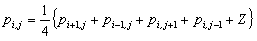, 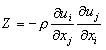 |
For comparison with the results published by Peper et. al (1997), a dimensionless pressure coefficient, Cp, was defined as shown in Fig. 3. Where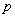is the calculated pressure, 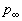is the atmospheric pressure and V is the average air velocity at the nozzle exit.The wall pressure distribution on the flat plate is shown in Fig. 3. The wall pressure has its maximum value at the jet axis and decreases with radial distance. The maximum value increases with decreasing nozzle distance from the tube exit, H/di. Good agreement was found between the pressure calculation and the pressure measurements near and around the stagnation region (in a region between the jet symmetry line and a radial distance of 1.25 tube diameters). The employment of the Newman boundary condition at the edge might be suspected for the differences found between the pressure calculation and the pressure measurements.
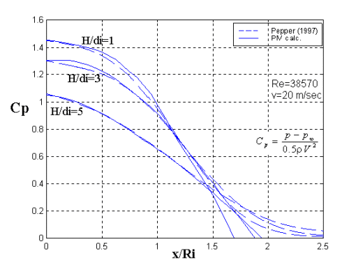
Fig. 3: A comparison of mean pressure calculation and measurements (Peper et al., 1997).
References
-
Peper F., Leiner W. and Fiebig M., Impinging radial and inline jets: a comparison with regrd to heat transfer, wall pressure distribution and pressure loss, Experimental Thermal and Fluid Science, 14, 194-204, 1997.
-
Echols W.H. and Young J.A., Studies of portable air-operated aerosol generators, NRL Report 5929, 1963.
-
Corcos G.M., The structure of the turbulent pressure field in boundary-layer flows, Journal of Fluid Mechanics, 18, 353-378, 1963.